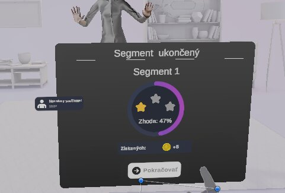
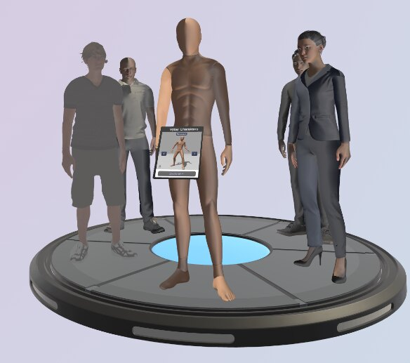

Screenshots: exercise with color feedback on the skeleton, body capture, segment result, character selection and the mobile app.
Bachelor's thesis2025 – 2026
MetaPohyb
A system for guided rehabilitation in VR. A physiotherapist prepares a plan in the mobile app, the patient exercises in a Meta Quest 3 headset and the app evaluates in real time how accurately they repeated the movement. I designed and implemented the whole system on my own.
- ▸Backend: PostgreSQL in Supabase, Row Level Security by role, triggers for plan progress, e-mail verification from a custom domain.
- ▸Custom protocol: UDP discovery, pairing and commands over WebSocket with a heartbeat, file transfer over HTTP with a session token.
- ▸Motion data: custom binary skeleton format, decoder in both C# and Dart, movement scoring from joint angles.
- ▸Voice control processed directly on the headset without internet (local Vosk model).
- ▸Server on the headset: WebSocket (RFC 6455) and an HTTP file server written on top of TcpListener, without a ready-made library. Heartbeat every 5 s, disconnect after 15 s without a response.
- ▸Full body: 84 joints from the Meta Movement SDK, 40 B per joint. Score from the angular deviation of each joint (45° tolerance), smoothed and weighted by segment duration.
- ▸Mobile app: separate flows for patient and physiotherapist, graph-based plan editor, daily missions generated from the user ID and date, reminders, SK/EN.
- ▸Validation: unit tests in both Unity and Flutter, user testing with 5 – 10 people, design consulted with a physiotherapist.
Flutter / DartSupabasePostgreSQLUnity 6 / C#Meta XR SDKWebSocketUDPVoskMeta Quest 3